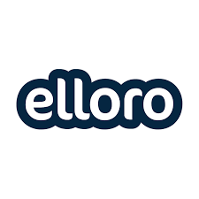

For an assignment I had to select three companies and do some research about them. For example: What do they do? How is the company culture? What positions do they offer? In this post I have written about the results and my opinion. The companies that I have researched are:
All three companies are Dutch and located in Zeeland. Estrategy has an option for either english or Dutch website. However, the dutch site has more information than the english one. The reason I chose for only local companies is because I wanted to take the opportunity to explore companies for later, for example for an internship or a job. I plan on staying in Zeeland after my studies so knowledge about nearby companies is very useful for me.
Results
Estrategy is an software company based in Goes, Zeeland. Creating customized software and selling standard soft ware are the core business in the company and they offer a big variety of options to choose from. They have between 11 and 50 employees and a lot of positions still open. Currently you can apply here for: an graduation internship, UI/UX designer, C# application developer senior, Office professional with experience in accountancy and application developer medior. The company culture is descibed as informal, with people who are passionate, value teamwork and have a variety of experience.
Elloro is an internet agency specialized in web and app development, Online marketing, Visual design and concept and strategy advice. The company is based in Middelburg. They have between 11-50 employees and the company culture is said to be positive and motivated. You have possibilities to grow and they provide you with a starter package, which contains the crucial things you need for your position. Right now the positions of Account manager- digital, Digital designer, Graduation internship webdevelopment HBO, Internship and graduation, Online marketing internship , Junior developer, Online marketeer, Project manager, Experienced webdeveloper and Talent student developer are open to apply for.
Statisfiteers is an IT group with a very big variety of services. They offer on site support, software development, digitalizing, cloud management, office 365 and google workspace, IT infrastructure, workspaces and helpdesk operations. Motivation, fun co workers and good communication are part of the company culture. They have between 11 and 50 employees and have one vacancy for the position of All-round ICT expert.
My opinion
First off about Estrategy. The website looks very organized, professional and has a good amount of information. You get a good view of the services they offer, their vacancies and the company culture. Personally I would work here. It seems like a good and organized work environment with a lot of experience. They offer a place for graduation internship and if that goes well you could stay working there. It's a company I could learn a lot even after my study.
Secondly Elloro. Personally I think I would enjoy working there. They offer you a starter package with all things needed for your position, so getting started is easier. Besides that they also have a very big variety of services with which you can work. They have a lot of positions you could apply for and they have a very organized website. The website also shows creativity, which I appreciate a lot.
Finally there is Statisfiteers. They don't offer as much information as the other two companies did on their sites so it was harder to create a clear view of everything. I do like that they do so much different projects and they show on their website that they are not very formal in communication. I am not sure if I would work here, I could not get a good enough view of the company and their culture to form a clear opinion.
References
Unfortunately every site is in Dutch as I explained above. I'm sorry for the inconvenience.
- https://satisfiteers.nl/over-ons
- https://satisfiteers.nl/#diensten
- https://www.linkedin.com/company/satisfiteers/
- https://www.estrategy.nl/vacatures/
- https://www.linkedin.com/company/estrategy-bv
- https://www.elloro.nl/over-ons-internetbureau-in-zeeland
- https://www.elloro.nl/werken-bij-een-internetbureau
- https://www.elloro.nl/diensten-internetbureau
- https://www.linkedin.com/company/elloro